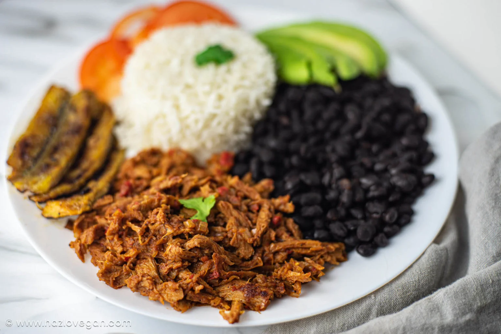

Pabellon - Odin Recipes

El pabellón criollo es un plato tradicional de Venezuela reconocido como el plato nacional por excelencia gastronomía venezolana
Ingredients
- 500 gramos de Falda de la vaca
- unidad de Pimiento rojo
- unidad de Cebolla blanca
- 2 dientes de Ajo
- 2 cucharadas soperas de Salsa inglesa
- rama de Cilantro
- 2 unidades de Tomate
- cucharadita de Comino
Steps
- Antes de realizar el pabellón criollo, el primer paso es alistar todos los ingredientes.
- En una olla a presión sellar la falda previamente aderezada con sal, pimienta y comino. Cuando esté dorada retirar y agregar la cebolla, el pimiento, el tomate sin piel y el ajo, todo picado finalmente, cocinar muy bien hasta que esté blando.
- Volver a llevar la carne a la olla, agregar la salsa inglesa, agua o caldo de res hasta que cubra un poco la carne. Incorpora también la rama de cilantro, un poco más de comino, sal y pimienta. Tapa la olla a presión y cocina durante 1 hora y media.
- Cuando esté lista la carne, con las manos o con un tenedor deshebra y lleva a la olla de nuevo para que absorba más el sabor del resto de ingredientes. Reservar hasta el momento de servir.
- Para las caraotas, desde la noche anterior déjalas en remojo, al momento de prepararlas agrega abundante agua en una olla a presión, añade las caraotas con un poco de cebolla y sal, y deja cocinar durante 1 hora y media.
- En una sartén prepara un sofrito con la cebolla, el pimiento rojo, el ajo cortado finamente y el papelón rallado. Luego, añádelo a las caraotas (si tienen mucha agua se puede retirar un poco), cocina a fuego medio hasta que espesen un poco, rectifica sabor con sal, comino y pimienta.
Return Home